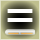
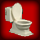
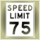
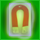

| Description | Points | Bonus/Penalty | |
|---|---|---|---|
100 points |
A little score booster | 100 | |
250 points |
Increase your score! Rack those points up baby, yeah! | 250 | |
500 points |
Woah, that's like breaking 50 blocks! | 500 | |
1000 points |
A whopping 1000 points! Hot mama! | 1000 | |
1 Up |
Grabbing this icon will increase your extra lives by one. | 50 | |
Super Blaster |
Grabbing this icon will give your paddle the ability to shoot balls! Click away on your mouse until all of the blocks are destroyed! | 50 | Breaking a block only gives one point. |
Fireball |
Grabbing this icon will set your balls on fire! Balls that are on fire will effortlessly destroy all blocks in their path, with the exception of steel and stone which will not be effected. | 50 | Breaking a block gives five points, instead of ten. |
Multi Ball |
Grabbing this icon will give you balls.... four in fact. | 50 | -1 point when breaking a block for each extra ball past your first. |
Large Paddle |
Grabbing this icon will increase the size of your paddle. | 50 |
-2 when a block breaks -1 when hitting a block |
|  Regular Paddle |
Grabbing this icon will return your paddle to it's original size. | 50 | |
Small Paddle |
Grabbing this icon will decrease the size of your paddle. | 50 |
+2 when a block breaks +1 when hitting a block |
|  Reset |
Grabbing this icon will undo any power ups you've acquired. | 50 +25 for each good powerup lost -25 for each bad powerup lost |
|
Slow Ball |
Grabbing this icon will cause your ball to move slowly. | 50 |
-2 when a block breaks -1 when hitting a block |
|  Speed Limit |
Grabbing this icon will return your ball to it's original speed. | 50 | |
Fast Ball |
Grabbing this icon will increase the speed of your ball. | 50 |
+2 when a block breaks +1 when hitting a block |
Magnet |
Grabbing this icon will allow balls to stick to your paddle. Click to shoot them off or wait 5 seconds. | 50 | |
|  Super Magnet |
An upgrade for the magnet! Grabbing this icon will not only allow balls to
stick to your paddle, but your paddle will actually attract falling balls! This powerup will only drop if you've already got the magnet. | 50 | |
Catch-all Blue |
Grabbing this powerup will cause you to automatically obtain all blue powerups
that drop. However, it only lasts 30 seconds. Blue powerups are usually helpful
or worth some points. | 50 | |
Catch-all Red |
Grabbing this powerup will cause you to automatically obtain all red powerups
that drop. Fortunately, it only lasts 30 seconds. Red powerups are usually the
ones that make it harder, although it should be noted that the Super Blaster is
a red powerup. The reset powerup will NOT be grabbed by the Catch-all Red
powerup, unless it is inside a random powerup (see below). | 50 +250 if you keep it the full 30 seconds. |
|
Random |
Some other powerup is hidden behind this falling question mark. This powerup
counts as both blue and red, if you have either of the two above powerups. Note that you get 50 points for this in addition to whatever point value is give by the powerup behind it. | 50 | |